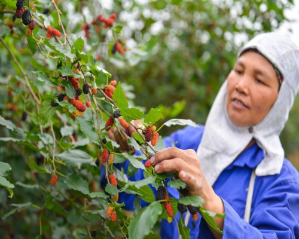

Trang chủ > Chuyên mục > Kinh tế > Nông nghiệp > Mùa thu hoạch dâu, nông dân Hà Nội kiếm tiền triệu mỗi ngày

Mùa thu hoạch dâu, nông dân Hà Nội kiếm tiền triệu mỗi ngày
Dâu tằm ở ngoại thành Hà Nội hiện đang vào mùa thu hoạch. Dâu chín hái đến đâu được thương lái mua buôn tại gốc, nông dân bán dâu thu nhập tiền triệu mỗi ngày.
Cây dâu giúp nông dân ngoại thành Hà Nội thu nhập cao nhưng nếu trồng ồ ạt sẽ lặp lại kịch bản được mùa rớt giá. ẢNH HOÀNG PHAN
Cơm đùm, cơm nắm hái dâu xuyên trưa
Cây dâu từ chỗ chỉ là loại cây trồng làm bờ rào nay đã giúp nhiều nông dân ngoại thành Hà Nội có thu nhập cao. Những ngày này, mùa dâu chín rộ ở khắp các xã Hiệp Thuận (huyện Phúc Thọ), Song Phượng (huyện Đan Phượng) khiến không khí thu hoạch, bán mua tấp nập.
Chúng tôi đến vùng đất bãi xã Hiệp Thuận (huyện Phúc Thọ) giữa trưa nắng nóng đầu tháng 4. Dưới những tán dâu là không khí nói cười, gọi nhau rổn rảng của từng tốp nông dân đang làm việc xuyên trưa. Nhiều vườn dâu ở đây trồng 5 - 6 năm nay, gốc cây to bằng phích nước, tán cao vài mét. Nông dân phải bắc thang hái những quả chín trên cao.
Nghỉ giải lao để “bắn” bi thuốc lào ngay dưới gốc dâu quả sai lúc lỉu, ông Nguyễn Phú Suất (nhà ở cụm 8, thôn Hiệp Thuận, xã Hiệp Thuận) cho biết, vùng đất bãi này trước trồng nhiều đậu tương, lạc, mía, nhưng vài năm nay, nông dân chuyển qua trồng dâu khi chứng minh hiệu quả kinh tế vượt trội.
Ông Suất dẫn chứng ngay tại nhà ông đã trồng 5 sào dâu, mỗi ngày có 7 người tham gia thu hoạch. Ngày hái nhiều, gia đình ông Suất thu được 100 - 140 kg quả, bán tại vườn giá 17.000 - 20.000 đồng/kg, trừ chi phí thuê nhân công, thu về gần 2 triệu đồng/ngày.
Cũng theo ông Suất, dâu là loại dễ trồng, chi phí lớn nhất là phân bón, tính ra mỗi sào đầu tư khoảng 1 - 2 triệu đồng, nhưng công việc vất vả nhất là hái dâu. Trời càng nắng, dâu càng chín rộ. “Dâu chín nhanh lắm, mùa thu hoạch ngắn, hái không kịp là hỏng quả. Các hộ đều phải thuê nhân công hái dâu, cả chủ vườn lẫn người hái thuê đều cơm đùm, cơm gói ăn uống tại chỗ để hái xuyên trưa cho kịp”, ông Suất nói.
Những ngày này, đi qua xã Song Phượng (huyện Đan Phượng), nhiều người ngỡ ngàng khi tận mắt thấy những vườn dâu quả chín đỏ cả góc vườn, nông dân đang hối hả thu hoạch. Dọc theo đường quốc lộ 32, đoạn qua huyện Đan Phượng và Phúc Thọ, dâu chín được đựng thành từng rổ bán dọc đường. Nhiều gia đình dịp này cũng tranh thủ treo biển giới thiệu dịch vụ trải nghiệm hái dâu sạch tại vườn.
Bà Lê Thị Thiềm (xã Song Phượng, huyện Đan Phượng) cho biết, vườn dâu 50 gốc của gia đình năm nay dự kiến cho thu 2,5 tấn quả là thành quả, sau vài năm chuyển đổi trồng thay thế táo, ổi. Cây dâu tằm dễ sống, trồng hơn 1 năm đã cho thu hoạch. Để quả to mập, vị ngọt không chua, thì cây dâu phải được trồng ở những chân ruộng ẩm, hoặc gần nguồn nước tưới. Dâu cũng không mất công chăm sóc nhiều, ít sâu bệnh nên chỉ cần bón, tưới phân định kỳ đều đặn từ khi cây đơm hoa kết quả.
Ông Nguyễn Xuân Hưởng, một trong số các hộ dân trồng dâu nhiều năm tại xã Song Phượng (huyện Đan Phượng), cho biết dâu hái đến đâu đều có thu mua tại chỗ đến đấy, giá từ 12.000 - 20.000 đồng/kg, theo quy luật sẽ còn tăng giá vào cuối vụ. Hiện có 80 gốc dâu cho hái quả, gia đình ông Hưởng dự tính sẽ có nguồn thu khoảng 40 - 50 triệu đồng.
Không khuyến khích mở rộng diện tích
Dâu là cây trồng mới tại nhiều xã ngoại thành Hà Nội như Phúc Thọ, Đan Phượng và hiện đang có đầu ra ổn định, giá khá cao. Chuyên thu mua hoa quả đổ buôn ở các tỉnh miền Bắc, anh Đoàn Văn Thứ (phường Cổ Nhuế, quận Bắc Từ Liêm, Hà Nội) cho biết, quả dâu hiện tại được sử dụng chủ yếu là ngâm rượu, ngâm đường, chế biến thành nước giải khát, hoặc dạng si rô.
Thị trường tiêu thụ dâu hiện chủ yếu là nội thành Hà Nội, rộng hơn là các tỉnh Lạng Sơn, Lào Cai và xa hơn vào các tỉnh miền Trung như Đà Nẵng. Quả dâu chín mềm, dễ bị dập nát, phải vận chuyển trong ngày nên chưa thể chuyển được vào miền Nam. Cũng theo anh Thứ, chỉ tính riêng xã Hiệp Thuận, mỗi ngày các thương lái đang thu mua khoảng trên dưới 10 tấn quả.
Trao đổi với Thanh Niên, ông Đỗ Hoàng Trung, Phó chủ nhiệm Hợp tác xã nông nghiệp xã Hiệp Thuận (huyện Phúc Thọ), cho biết cây dâu được trồng ở địa phương từ khoảng 5 - 6 năm nay. Qua khảo sát thực tế, mùa dâu năm nay trúng vụ, cho quả to đều, mã đẹp. Giá bán tại vườn có ngày lên tới 18.000 - 20.000 đồng/kg. Cũng theo ông Trung, giá dâu năm giảm sâu nhất là 7.000 - 8.000 đồng/kg. Quả dâu hái bán trong ngày, nông dân thu được tiền tươi và thời gian thu hoạch kéo dài hàng tháng, không tốn công chăm sóc, chi phí đầu tư thấp nên đây vẫn là cây trồng đem lại nguồn thu nhập cao.
Mặc dù vậy, ông Trung cho hay: “Dâu không phải là cây trồng chủ lực ở địa phương. Chúng tôi khuyến cáo người dân không mở rộng diện tích hay phá bỏ những cây trồng khác như bưởi, ổi... để trồng dâu thay thế”.
Ông Ngô Thế Anh, Giám đốc Hợp tác xã nông nghiệp xã Song Phượng (huyện Đan Phượng), cho biết từ một vài hộ trồng thử nghiệm khi cây dâu cho thu nhập cao, đến nay, toàn xã có 20 - 30 hộ trồng dâu với tổng diện tích trên 1 ha. Nếu diện tích trồng dâu tiếp tục mở rộng, những năm tới, nông dân sẽ gặp khó khăn ở đầu ra, tương tự như nhiều loại cây trồng trước đây.
Cũng theo ông Thế Anh, hợp tác xã vận động người dân coi đây là cây trồng có thu nhập tăng thêm, không mở rộng thêm diện tích, và phía hợp tác xã phối hợp với cán bộ trạm thực vật chuyển giao khoa học kỹ thuật, hướng dẫn các hộ trồng dâu chăm sóc để mỗi vụ dâu đều có năng suất cao, quả đạt chất lượng tốt.


Từ khoá: thu hoạch dâu , cây dâu tằm .